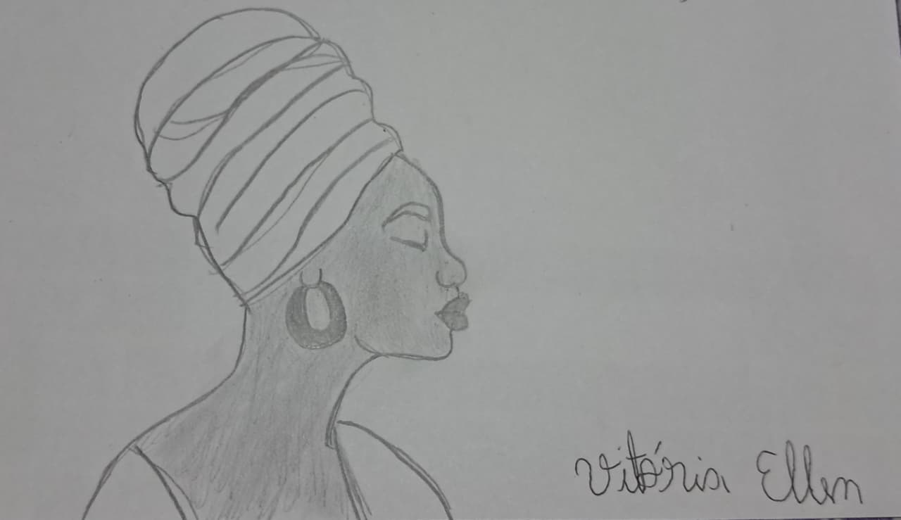

Ser negra é ser

Ser negra é ser rainha
Ser negra é ser batalhadora
Ser negra é ser forte
Ser negra é ser sonhadora.
Ser negra é ser passado
Ser negra é ser presente
Ser negra é ser futuro
Ser negra é ser transcendente
Ser negra é ser bonita.
Viva a mulher negra!
"Meu nome é Vitória Ellen Diniz Moura, tenho 12 anos e estudo na EMEFE Severino Ramos da Nobrega. Sou filha de Ivonete Diniz Ferreira e José Ellel da Silva Moura. Gosto de desenhar e de brincar com o minha gatinha Mili"